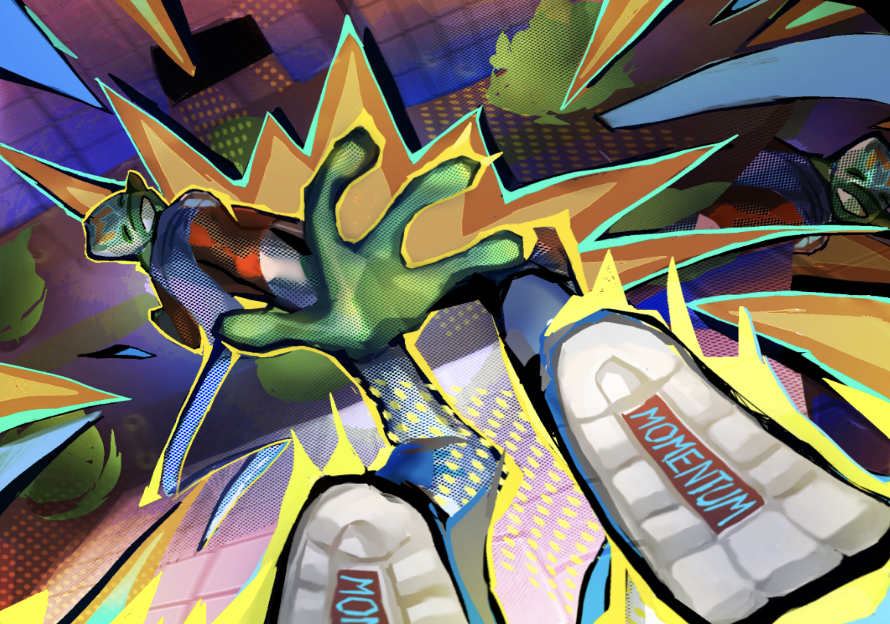
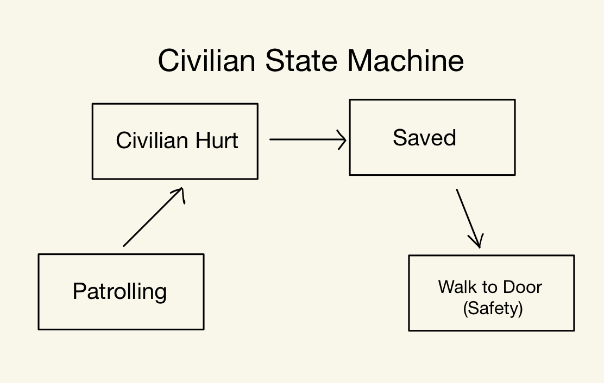

Momentum
Lead Programmer | Unity | C#
Momentum is an action-packed superhero game where players take on the role of a teenage hero with alien-enhanced agility. Equipped with a homemade suit, the player navigates cityscapes, battles mutants, and saves civilians.
The game features fast-paced traversal, interactive combat, civilian rescue events, enemy AI, and responsive gameplay UI.
Civilian Events
Players save civilians from collapsing buildings using real-time physics and event-based gameplay systems.
- After a building collapse, players must clear debris from trapped civilians.
- Implemented a state machine managing civilian behavior including Patrolling, Hurt, Saved, and Evacuating states.
- Players can prevent buildings from collapsing by pressing G during the beta interaction.
- Collider-driven physics capture precise grab points when stabilizing structures.
- Camera shake provides real-time feedback during high-tension interactions.
- Enemy AI swarm and attack buildings based on player distance using a separate state machine.

UI
Implemented responsive, anchored UI to support multiple screen ratios in collaboration with the UI team.
- Health bar with a chip-away effect that updates instantly through event subscriptions.
- Pulsing blood overlay triggered when player health is low.
- Speedometer with animated speed lines that scale based on flight velocity.
- Enemy and civilian health bars using canvas groups to billboard and fade based on camera distance and direction.
- Randomized blood splatter effects triggered when enemies are hit.
- Interactive main menu built with Cinemachine virtual cameras and UI buttons.
- Pause screen implementation.
- Animated end screen.

Enemy State Machine
I programmed two enemy types for the project: one land-based enemy and one flying enemy.
Land Enemy - Mutant Shrimp
- Patrol State: The enemy roams the environment searching for civilians or throwable objects.
- Chase Player State: If the player is detected within sight range, the enemy aggressively pursues them.
- Pursuing Throwable State: The enemy locates and moves toward the nearest throwable object, such as a car.
- Throwing Car State: If a throwable object is acquired, the enemy stops, aims, and throws it at the player.
- Attacking Civilians State: If no player is nearby, the enemy attacks civilians or buildings.
- Jump Up State: The enemy prepares and executes a vertical jump.
- Jump Attack State: After jumping, the enemy slams toward the player and deals area damage.
- Jump Attack Cooldown State: The enemy briefly recovers after landing.
- Dash Player State: The enemy performs a high-speed charge toward the player when within dash range.
- Wait For Player State: The enemy pauses and waits for the player to become vulnerable before attacking.
- State Transitions: States change based on player proximity, throwable availability, and civilian presence.
- AI Behavior: Uses raycasts and sphere checks for obstacle detection, targeting, and environmental awareness.
Flying Enemy - Prototype
- Chase State: Follows the player at a set distance using NavMesh and raycasting.
- Dash Attack State: Performs burst dashes when the player enters attack range.
- State Transitions: Switches between Chase and Dash based on player distance.
- Obstacle Avoidance: Uses raycasts and sphere casts to navigate around geometry.
- Rotation Handling: Continuously faces the player during pursuit.